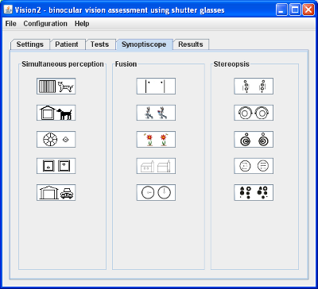

Tab "Synoptiscope" (picture 1) is divided into 3 parts for 3 types of synoptiscope-like tests: for simultaneous perception, for fusion and for stereopsis. Launching specific test ensue after clicking one of icons symbolized tests. Test control is described in section Test control
